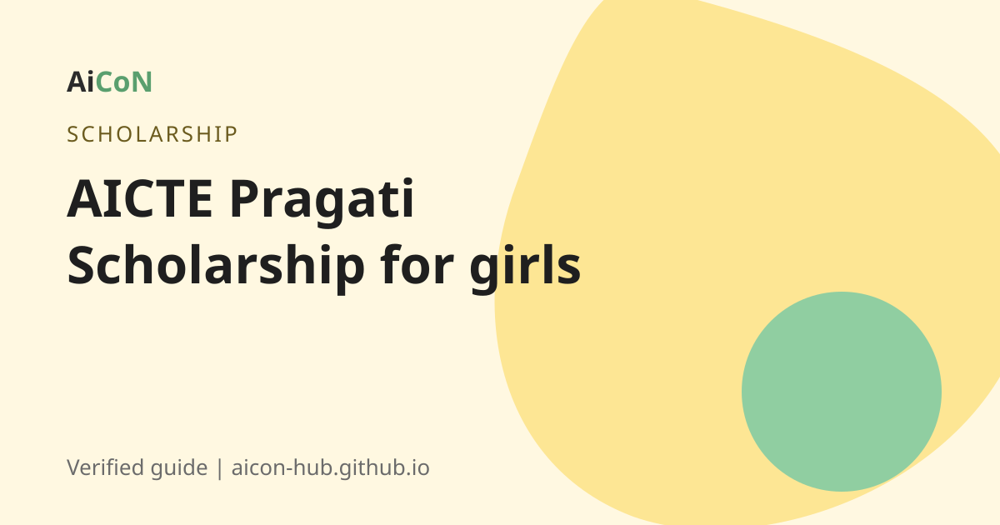

AICTE Pragati Scholarship: Rs 50,000 a year for girl students in technical courses
The Pragati scholarship helps girl students in AICTE-approved technical degree and diploma courses. Applications for 2026-27 close on 31 October 2026 on the National Scholarship Portal (NSP).

What is the Pragati scholarship?
Pragati is an AICTE scholarship scheme for girl students. There is a degree-level scheme and a diploma-level scheme. Both are on the National Scholarship Portal at scholarships.gov.in.
The earlier AiCoN post said the benefit is Rs 50,000 a year for every year of study, for college fees, computer, books and stationery. We could not re-open the AICTE scheme page for the amount in this check. Confirm the amount on the NSP scheme page before you apply.
Who can apply?
From the official AICTE guidelines and FAQ on NSP:
- The girl is admitted to the first year of a degree course, or to the second year through lateral entry, in an AICTE-approved institution. Diploma has similar rules.
- Up to two girls per family can get it.
- Family income from all sources must be below Rs 8 lakh a year.
- You need a valid income certificate from the State or Union Territory government.
Kerala students can get the income certificate from the e-District portal. See our e-District guide.
Important dates for 2026-27
| Scheme opened | 1 June 2026 |
|---|---|
| Last date for students to apply | 31 October 2026 |
| Defective application verification (degree and diploma) | till 15 November 2026 |
| Institute verification | till 15 November 2026 |
| DNO/SNO/MNO verification (degree) | till 30 November 2026 |
These dates are from the NSP "All Scholarships" page on 6 October 2026. Dates can be extended, so check NSP.
How to apply, step by step
- Open scholarships.gov.in.
- Do the One Time Registration (OTR) if you have not already.
- Log in and choose the AICTE Pragati scheme (degree or diploma).
- Fill in your details and upload the documents: income certificate, admission proof, bank details and others the form lists.
- Submit before 31 October 2026.
- Ask your institute to verify the application. Without their verification it will not move forward.
- Track your status on NSP.
Cost, eligibility and limits
| Cost to apply | Free. NSP charges no fee. |
|---|---|
| Who | Girl students in AICTE-approved technical degree or diploma courses, family income below Rs 8 lakh, up to two girls per family. |
| Where | All of India, including Kerala. |
| Limit | Your institute must be AICTE-approved and must verify your application. |
Stay safe
- Never pay anyone for a "guaranteed" scholarship.
- Use only scholarships.gov.in.
Frequently asked questions
What is the last date?
31 October 2026 for students, according to the NSP page we checked.
Is there an application fee?
No. NSP is free.
Can two sisters both get it?
Yes. The rule is up to two girl children per family.
Do I need an income certificate?
Yes, a valid one from the State or UT government.
Can I apply if I am in a diploma course?
Yes. NSP has a separate Pragati scheme for diploma.
Sources: National Scholarship Portal, NSP: All Scholarships (dates), Pragati guidelines (degree), Pragati FAQ. Checked 6 October 2026.